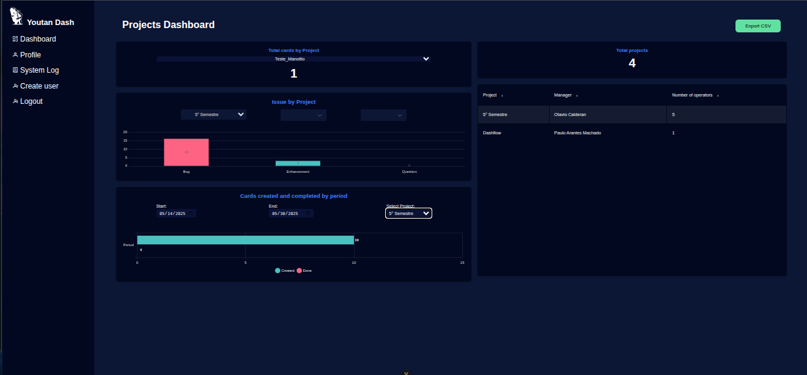

O acesso do Admin também requer uma conta criada previamente. Após o login com credenciais válidas, o Admin poderá acessar os recursos administrativos. Observação: A visualização depende dos dados disponíveis no Data Warehouse (DW).
Tela de Login:
Dashboard do Admin:
Exibe os KPIs dos projetos, possui opções no menu lateral: "Profile", criação de usuários, visualização de logs e logout. Contém botão de exportação CSV.

Função Exportar:
Foi adicionado um botão na interface do painel de administração para permitir a exportação dos dados exibidos na tela em formato CSV.
Cartões do Admin:
Apresenta a quantidade de cartões por projeto por meio de um filtro, enquanto um segundo cartão demonstra o total de projetos.
Cards por Período:
Exibe cards criados/finalizados em período filtrável.
Issues por Projeto:
Exibe quantidade de issues com filtros.
Tabela de Projetos:
Visualiza informações por linha: gerente responsável, número de operadores.
Tela de Cadastro de Usuário:
Permite cadastrar usuários, selecionar ferramenta de gestão (Taiga, Trello ou Jira) e associar a projetos e usuários.
Formulário de Registro:
Campos obrigatórios:
- FullName: Nome completo (até 255 caracteres)
- Username: Até 60 caracteres
- Password: Senha de acesso
- E-mail: E-mail válido
- Role: ROLE_OPERATOR, ROLE_MANAGER ou ROLE_ADMIN
- Tools:Escolha da ferramenta de gestão de projetos, Taiga, Trello ou Jira
- Project-Tool: Lista de projetos da ferramenta escolhida
- User Project-Tool: Lista de usuários do projeto escolhido
Botão Clean up: limpa os dados dos campos
Botão Register: Registra o novo usuário
Tabela de Usuários:
Lista usuários ativos, com opções para atualizar ou excluir dados.
Log do Sistema:
Exibe ações realizadas no sistema: usuário, ação executada e data.